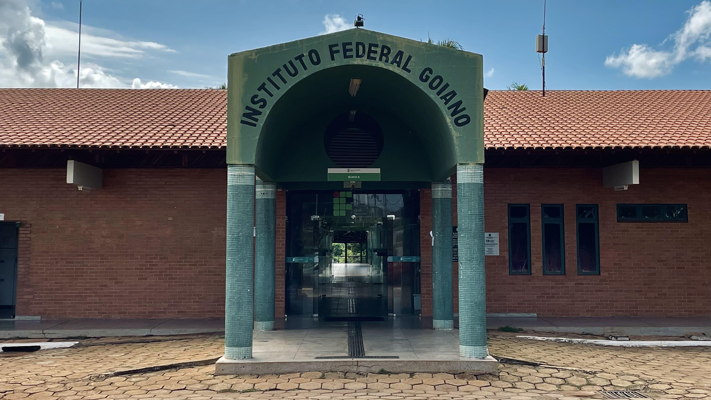

Rialma
Rialma está localizada ao lado de Ceres, sendo separada pelo Rio das Almas. Possui forte integração comercial com Ceres.
Curiosidade: As duas cidades são conectadas por uma ponte sobre o Rio das Almas.

O Instituto Federal Goiano (IF Goiano) Campus Ceres é uma instituição pública federal de ensino localizada no município de Ceres, no estado de Goiás, na região Centro-Oeste do Brasil.
Sua atuação está voltada à educação profissional, científica e tecnológica oferecendo formação que integra ensino, pesquisa e extensão. O campus desempenha um papel importante na formação de profissionais e no desenvolvimento econômico, social e cultural do Vale de São Patrício, atendendo estudantes de diferentes municípios da região.
O campus desempenha um papel importante na formação de profissionais e no desenvolvimento econômico, social e cultural do Vale de São Patrício, atendendo estudantes de diferentes municípios da região.
O Instituto Federal Goiano (IF Goiano) Campus Ceres é uma instituição pública federal de ensino localizada no município de Ceres, no estado de Goiás, na região Centro-Oeste do Brasil.
O Vale de São Patrício está localizado na região central e centro-norte de Goiás, no Centro-Oeste brasileiro. O município de Ceres é um dos principais polos regionais de educação, comércio e serviços. O Campus Ceres fica na zona rural, na Rodovia GO-154, km 3, a aproximadamente 180 km de Goiânia.
A ocupação e o desenvolvimento da região ganharam força a partir da década de 1940, durante o governo de Getúlio Vargas, com a política de expansão agrícola e ocupação do interior brasileiro.
Nesse contexto, foi criada a Colônia Agrícola Nacional de Goiás (CANG), que contribuiu para a formação de Ceres. A iniciativa buscava estimular a agricultura, promover o povoamento e integrar novas áreas à economia nacional. A chegada de migrantes de diferentes partes do país ajudou a formar a população e a cultura regional.
Ceres foi emancipada em 1953 e, ao longo das décadas seguintes, desenvolveu atividades comerciais, educacionais e de saúde, tornando-se uma referência para municípios vizinhos. A criação da Escola Agrotécnica Federal, posteriormente transformada no IF Goiano, acompanhou esse processo de desenvolvimento regional.
| Municipio | População | Destaque regional |
|---|---|---|
| Goianésia | 73.708 | Polo regional de comércio, agroindústria e produção sucroenergética. |
| Jaraguá | 45.223 | Tradição na confecção de roupas e comércio. |
| Itapuranga | 26.113 | Agricultura e pecuária. |
| Ceres | 22.046 | Referência regional em educação e saúde. |
| Itapaci | 21.087 | Comércio e atividades agropecuárias. |
| Rubiataba | 19.788 | Agroindústria, cana-de-açúcar e bioenergia. |
| Uruana | 13.729 | Produção de melancia. |
| Rialma | 12.165 | Comércio e integração urbana com Ceres. |
Rialma está localizada ao lado de Ceres, sendo separada pelo Rio das Almas. Possui forte integração comercial com Ceres.
Curiosidade: As duas cidades são conectadas por uma ponte sobre o Rio das Almas.
Rianápolis é um município goiano próximo a Ceres, com economia ligada à agricultura, pecuária e comércio local.
Curiosidade: O município está situado próximo ao eixo rodoviário que liga Ceres a Anápolis.
Carmo do Rio Verde faz parte da região do Vale de São Patrício e possui atividades agrícolas e agroindustriais.
Curiosidade: O município tem sua história e economia ligadas à produção agropecuária regional.